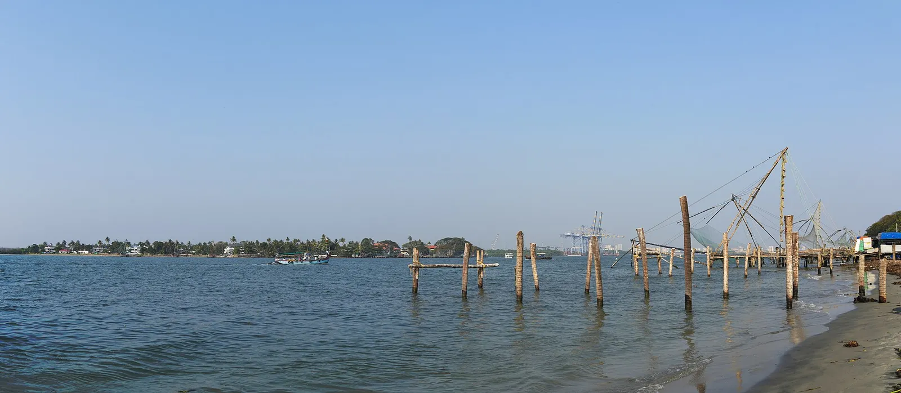
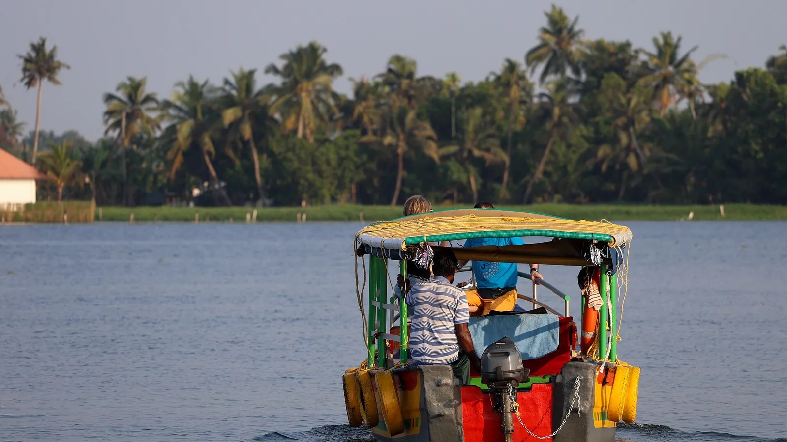
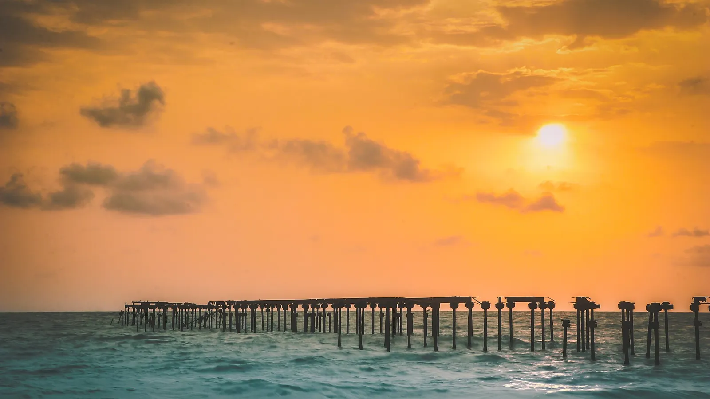
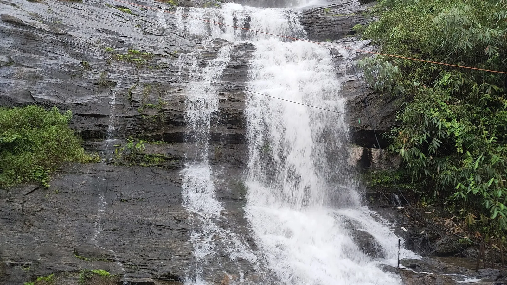
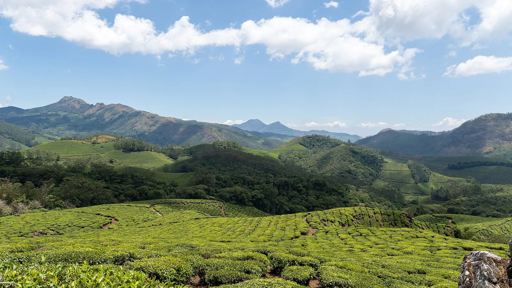
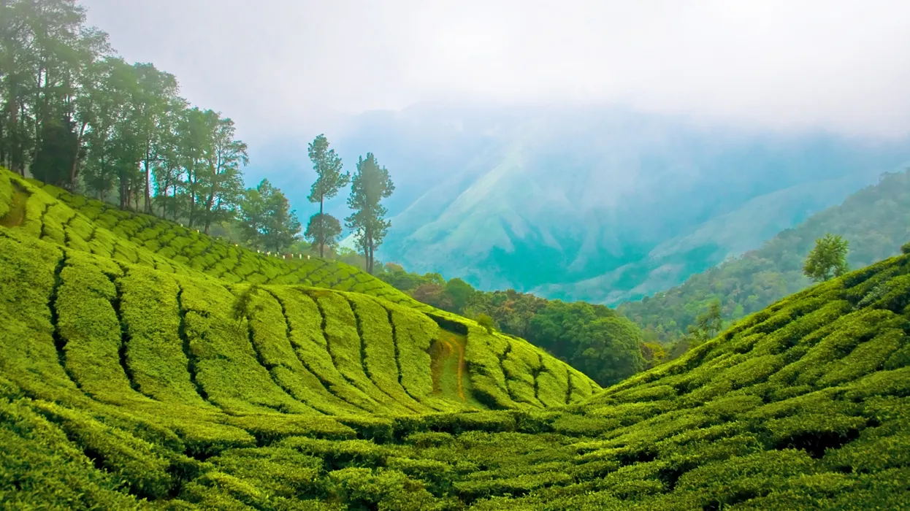
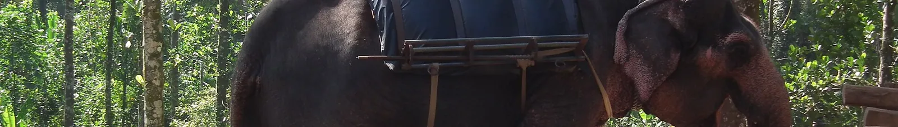
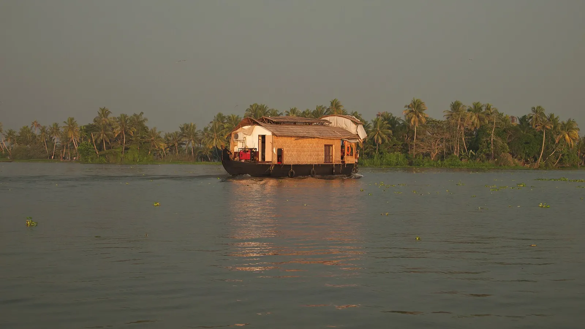
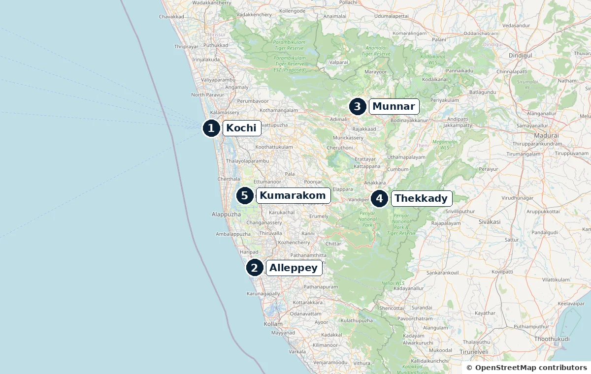

A romantic Kerala circuit with time to rest. Two nights in Fort Kochi, three on the backwaters of Alleppey with one on a private houseboat, three in the tea estates of Munnar, a night in the spice hills of Thekkady, and four nights at an Ayurveda resort to finish. This itinerary is built from our nights-per-place outline; the day plans, timings and changes are ours.
See it for yourself
Photos from the journey











Where you go
The journey on one map

Day by day, in short
Daily travel brief
Distances are by road for the whole day. The full plan with timings comes with your detailed itinerary.
-
1
Arrive in Kochi
- Fort Kochi is about 1 hour 30 minutes from the airport.
-
2
Fort Kochi and Mattancherry
- Mattancherry Palace and Jew Town: the palace is closed on Fridays; the synagogue on Fridays and Saturdays.
- Fort Kochi's cafés are perfect for a slow lunch.
-
3
To the backwaters of Alleppey
- Ask for a couple's massage at the resort tonight.
-
4
A private houseboat on Vembanad Lake
- Moored in the paddy fields: by law, houseboats stop cruising and moor at about 17:30.
- Choose an air-conditioned houseboat; the AC usually runs at night only.
-
5
Back on land: Alleppey beach and village
- A good day for a spa treatment.
-
6
Up into the tea hills of Munnar
- Munnar nights are cool; carry a light jacket.
-
7
Eravikulam and the tea estates
- Eravikulam National Park: closed for calving, usually February to March.
- Tea Museum and Mattupetty Dam: the Tea Museum is closed on Mondays.
-
8
A slow day in the hills
- Many Munnar resorts arrange a candle-lit dinner in the garden.
-
9
Cardamom hills to Thekkady
- Tomorrow's Periyar boat leaves about 07:30.
-
10
Periyar Lake, then to your Ayurveda resort
- Periyar Lake boat ride: tickets sell out early in peak season.
- Ayurveda works best with light meals and no alcohol during treatment.
-
11
Ayurveda and the lake
- Rest between treatments; the effect builds day by day.
-
12
Kumarakom Bird Sanctuary and more Ayurveda
- Birding is best from November to February.
-
13
Fly home from Kochi
- Transfer to the airport: leave 4 hours before an international flight and 3 before a domestic one.
- Pack liquids and souvenirs in checked baggage.
Local know-how
Travel hacks from our desk
UPI, cards and cash
UPI works almost everywhere, even at small stalls. Keep some cash in INR 100 and 200 notes for temples, parking, tips and places where the network is weak.
Temple and shrine etiquette
Cover shoulders and knees. Remove shoes where asked, and carry socks for hot stone floors. Leather belts and bags are not allowed inside some Jain and Hindu temples. Ask before photographing people and inside shrines.
Water and street food
Drink sealed bottled or filtered water only. Choose busy stalls where food is cooked in front of you, and skip cut fruit and ice from roadside stalls.
Driving times
Indian roads are slower than the kilometres suggest: plan on 40 to 50 km an hour on highways and much less in hills and towns. Your driver's breaks and meal stops are built into the timings.
Plugs and tipping
Plugs are Indian three-pin and two-pin, 230 volts. Tipping drivers and guides about INR 300 to 500 a day is appreciated.
When to go
Best time to visit for this journey
November to February for weather; June to August if Ayurveda is the main aim.
October to March. For deep Ayurveda, many resorts recommend the monsoon months of June to August, when the air is cool and moist.
The package
What's included
Included
- 12 nights with breakfast; full board on the houseboat
- Private car throughout
- Ayurveda consultation (treatment package quoted separately)
- 24/7 support from Blue Diamond Voyage
Not included
- Flights and trains not listed as included
- Entry fees, guides, boats and activities
- Lunches and dinners unless stated
- Travel insurance
- Ayurveda treatment packages
The detailed itinerary
Some journeys are planned. Ours are crafted.
The full 13-day plan is ready: hour-by-hour timings, drive times, temple dress codes, food for your diet and a route map for every day. Tell us your dates and your city, and we'll send it to you on WhatsApp, shaped around you.
- Hour-by-hour timings
- A route map for every day
- Hotel and room details
- Visa and entry steps
- Vegetarian and Jain dining
24/7 travel desk+91 97148 59797+91 98242 21400
Photo and map credits
- Cochin International Airport: Ranjithsiji, CC BY-SA 4.0, via Wikimedia Commons
- Chinese Fishing Nets Fort Kochi: Ingo Mehling, CC BY-SA 4.0, via Wikimedia Commons
- Alappuzha: Ganesh Mohan T, CC BY-SA 4.0, via Wikimedia Commons
- Alappuzha Beach: Mohanrangaphotography, CC BY-SA 4.0, via Wikimedia Commons
- Cheeyappara Waterfalls: Ranjithsiji, CC BY 4.0, via Wikimedia Commons
- Eravikulam National Park: Rainer Halama, CC BY-SA 4.0, via Wikimedia Commons
- Top Station: Bimal K C from Cochin, India, CC BY 2.0, via Wikimedia Commons
- Kumily: Rameshng, CC BY-SA 3.0, via Wikimedia Commons
- Vembanad Lake: Vyacheslav Argenberg, CC BY 4.0, via Wikimedia Commons
- Kumarakom Bird Sanctuary: Ganesh Mohan T, CC BY-SA 4.0, via Wikimedia Commons
- Cochin International Airport: Ranjithsiji, CC BY-SA 4.0, via Wikimedia Commons
- Maps: © OpenStreetMap contributors; road routes by OSRM.